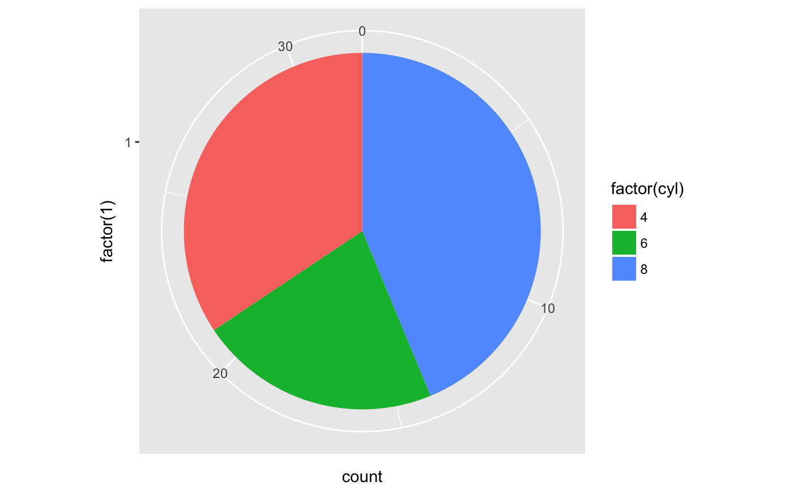
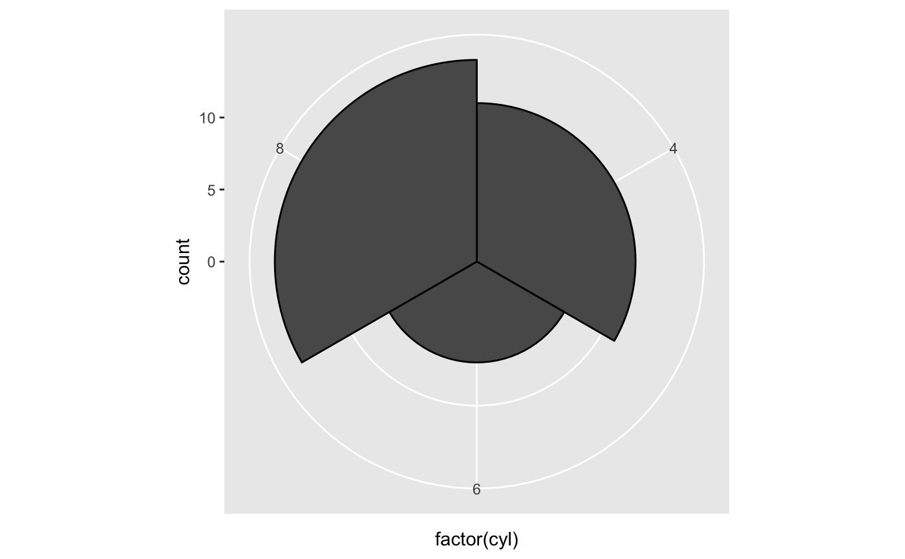
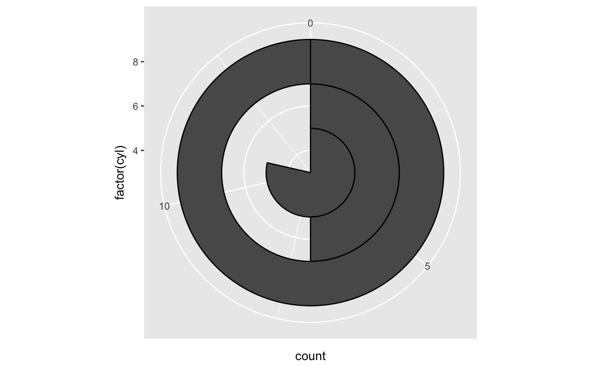
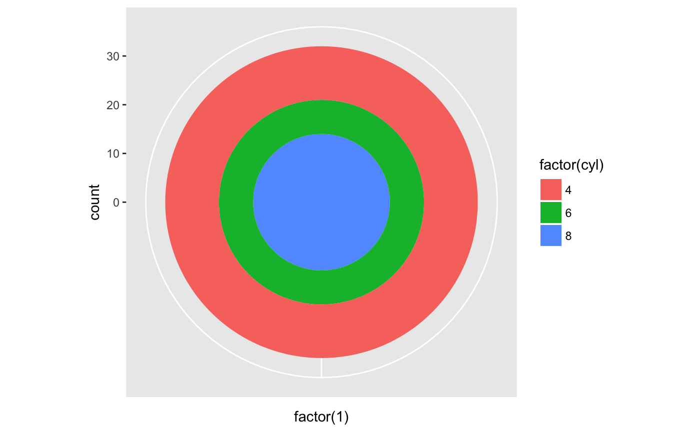
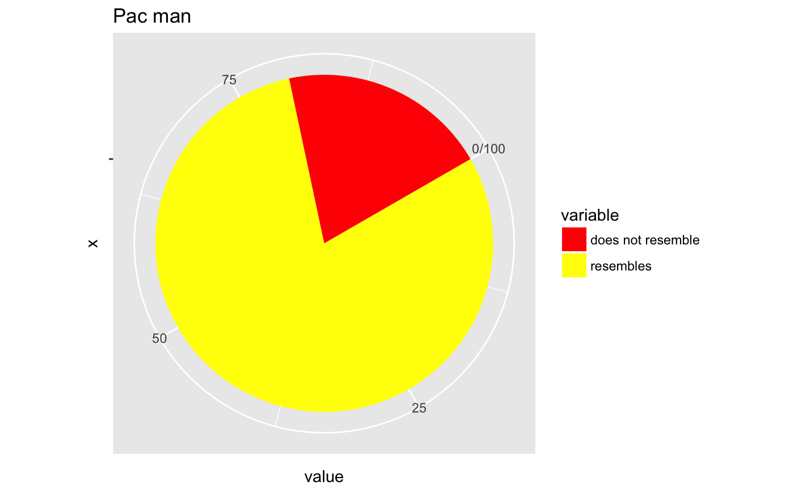

The polar coordinate system is most commonly used for pie charts, which are a stacked bar chart in polar coordinates.
coord_polar(theta = "x", start = 0, direction = 1)
Arguments
| theta | variable to map angle to ( |
|---|---|
| start | offset of starting point from 12 o'clock in radians |
| direction | 1, clockwise; -1, anticlockwise |
Examples
# NOTE: Use these plots with caution - polar coordinates has # major perceptual problems. The main point of these examples is # to demonstrate how these common plots can be described in the # grammar. Use with EXTREME caution. #' # A pie chart = stacked bar chart + polar coordinates pie <- ggplot(mtcars, aes(x = factor(1), fill = factor(cyl))) + geom_bar(width = 1) pie + coord_polar(theta = "y")# A coxcomb plot = bar chart + polar coordinates cxc <- ggplot(mtcars, aes(x = factor(cyl))) + geom_bar(width = 1, colour = "black") cxc + coord_polar()# A new type of plot? cxc + coord_polar(theta = "y")# The bullseye chart pie + coord_polar()# Hadley's favourite pie chart df <- data.frame( variable = c("does not resemble", "resembles"), value = c(20, 80) ) ggplot(df, aes(x = "", y = value, fill = variable)) + geom_col(width = 1) + scale_fill_manual(values = c("red", "yellow")) + coord_polar("y", start = pi / 3) + labs(title = "Pac man")# Windrose + doughnut plot if (require("ggplot2movies")) { movies$rrating <- cut_interval(movies$rating, length = 1) movies$budgetq <- cut_number(movies$budget, 4) doh <- ggplot(movies, aes(x = rrating, fill = budgetq)) # Wind rose doh + geom_bar(width = 1) + coord_polar() # Race track plot doh + geom_bar(width = 0.9, position = "fill") + coord_polar(theta = "y") }#>